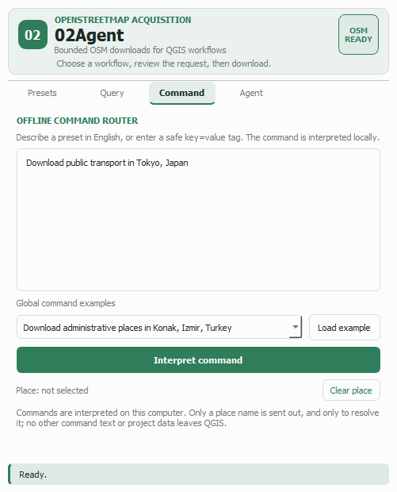
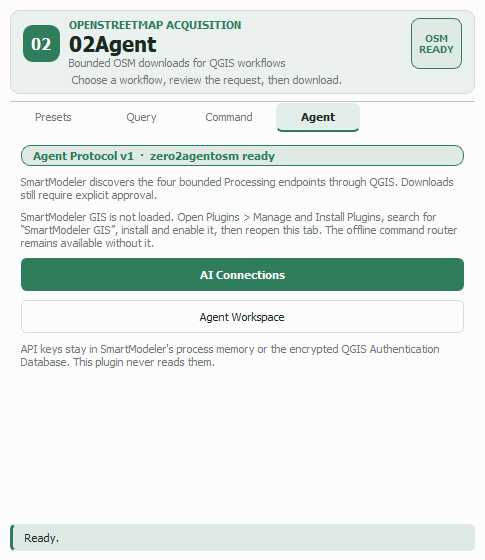

Guide 5 of 5
Three things that make the plugin faster to live with: describing a request in plain English, getting results that are already readable on the map, and letting an assistant drive the same downloads under your approval.
The Command tab takes a sentence and turns it into a request you can review. Download public transport in Tokyo, Japan selects the transit datasets and starts resolving Tokyo; building=* polygon sets up a custom tag download.
Press Interpret command and the dock switches to the Presets tab with everything filled in. Nothing downloads until you press Download — interpretation is a suggestion, never an action.
The seventeen worked examples cover every continent, which doubles as a hint about phrasing: a dataset word plus in plus a place name is all the router needs.

Downloads are styled as they arrive, using native QGIS categorized renderers — real, editable symbology, not a flat colour you have to redo.
Map style offers 16 palettes, previewed by the swatch strip under the control. Each one styles the whole scene coherently: buildings split by function (residential, commercial, industrial, civic, worship), roads by OpenStreetMap highway class, plus rail, transit routes, water, green space, trees and common points of interest.
Road width either scales line width by highway category — so motorways read as motorways and service roads recede — or draws every road at one width when you want an even network diagram. Both settings persist between sessions and apply to every later download.
Add OSM basemap inserts the standard OpenStreetMap tile layer at the bottom of the layer tree, with attribution set. Pressing it again reveals the existing layer rather than stacking duplicates.
The Agent tab exposes the plugin's four Processing algorithms under Agent Protocol v1, so 02Agent Smart Modeler GIS can discover, inspect and run them.
The safety model is the point. An agent can only call the same bounded endpoints you use, every run needs your explicit approval, and outputs are temporary QGIS layers. There is no raw query, no arbitrary URL, no file path and no API key anywhere in the interface.
API keys stay in 02Agent Smart Modeler's own process memory or the encrypted QGIS Authentication Database. This plugin never reads them. If 02Agent Smart Modeler is not installed the tab says so and everything else keeps working.

They also work on their own, from the QGIS Processing toolbox, inside models and in batch mode. Look under 02Agent OSM › OSM acquisition.
| Algorithm | Key parameters | Use it for |
|---|---|---|
download_preset |
Preset (multi-select), Extent | Curated thematic datasets over any extent, tiled automatically when wide. |
download_place |
Place, Download boundary, Area id, Preset, Extent | Datasets for a named place, optionally clipped to its mapped boundary. |
download_custom_tag |
Key, Value, Geometry, Extent | A single OpenStreetMap key/value pair. |
download_advanced |
Match mode, Geometry scope, Key 1–4, Value 1–4, Extent | Structured multi-tag queries, the toolbox equivalent of the Query tab. |
All four produce the same three outputs — OUTPUT_POINTS,
OUTPUT_LINES and OUTPUT_POLYGONS — with the same attribute
schema, so a model built on one works with another.
Batch downloads Right-click an algorithm and choose Execute as Batch Process to run a list of places or extents in one go. Keep the list modest and remember every row is a real request to a shared public server.
Four fixed hosts, and no way to point it anywhere else: three Overpass API mirrors
(overpass-api.de, overpass.kumi.systems,
overpass.private.coffee), tried in turn with per-mirror diagnostics,
and nominatim.openstreetmap.org for place search. Responses are cached
for the session so repeating a request costs nothing.